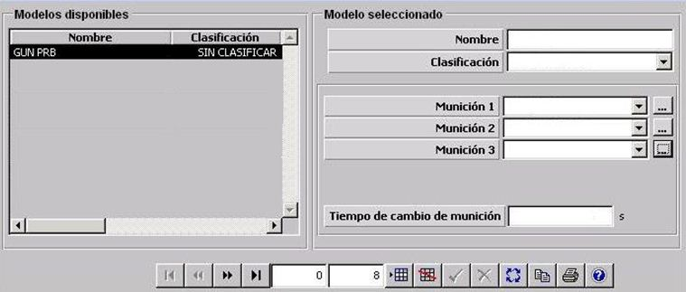

Artillería

Descripción de los parámetros:
Munición (1,2,3): Tipo de munición que se puede lanzar desde el cañón. Se puede cargar hasta 3 tipos de municiones distintas seleccionadas entre las municiones existentes. Ver apartado Munición.
Tiempo de cambio de munición: Tiempo necesario para llevar a cabo el cambio de tipo de munición del cañón.
Unidades: segundos
Rango: 0 – 9999